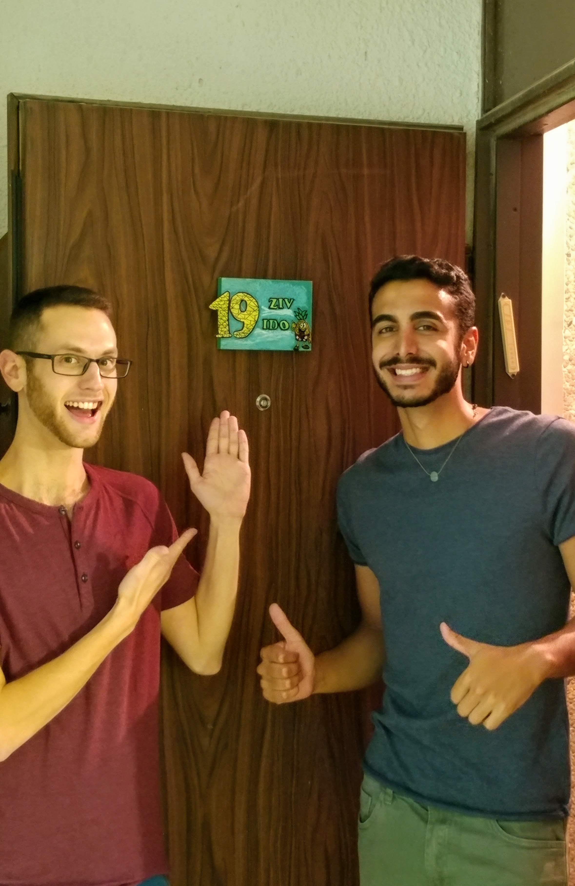
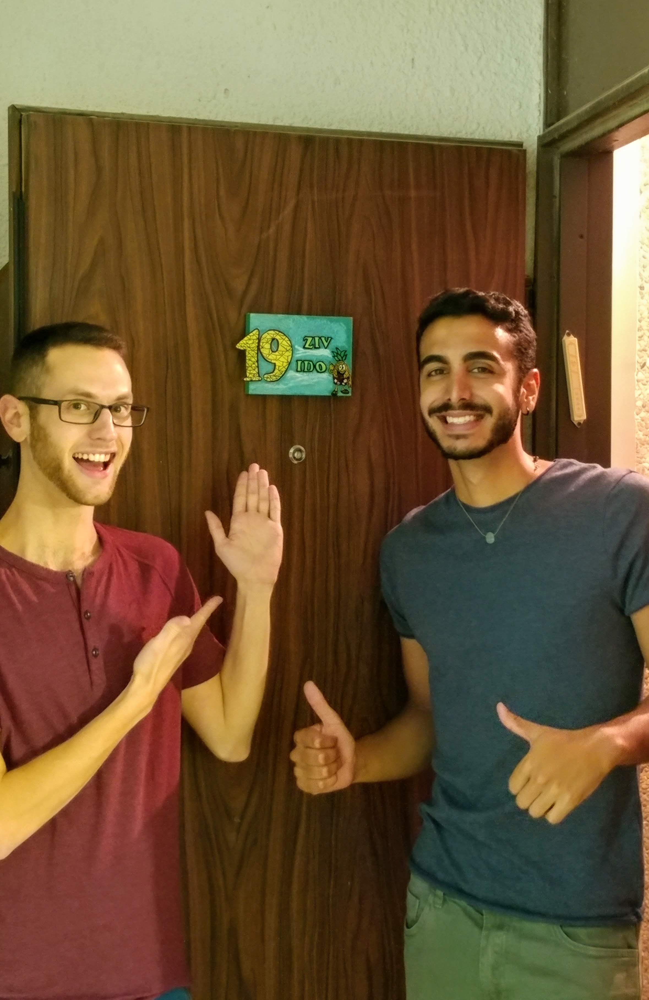

About me
My name is Ziv Gura, I'm 26 years old. Originlly from Ness-Ziona. I'm a third year student of Information Systems Engineering in Ben Gurion University.
My main areas of intrest are music, cooking, botany and technology. I like to dance, talk to my friends, laugh and watch Si-fi movies and series.
I'm highlly motivated to learn about web programming: what we can, and can't do, how to do it and learn different ways to do it.
My photos
 

Scan my code

Ans
תשובה 1:
שלושה הבדלים עיקריים בין web1, web2 ו web3:
-
סטטיות הדפים
- בweb1 הדפים הם סטטים לגמרי, ב web2 הדפים קצת יותר דינמיים ומאפשרים להציג נתונים בצורות שונות ובweb3 הדפים לגמרי דינמיים המציגים נתונים מתעדכנים ומנשקים מגיבים.
-
קריאה/כתיבה
- בweb1 ניתן רק לקרוא את תוכן הדף, בweb2 ניתן לקרוא וגם לכתוב פרטים בדף וב web3 ניתן גם לקרוא, גם לכתוב וגם להריץ אפליקציות.
-
תוצאות מנועי חיפוש
- בweb1 התוצאות רחבות מאוד ועוסקות בנושא הכללי של החיפוש, בweb2 התוצאות ממוקדות יותר, עדיין עוסקות בנושא הכללי אך מקבלות מיקוד מתגים שמופו ידנית ובweb3 התוצאות ממוקדות הרבה יותר בזכות תגים שמופו טוב יותר ובצורה אוטומטית
תשובה 2:
תצוגת השאילתה "תופעות לוואי של תרופות":
-
web1: הרבה מאוד תוצאות, רובן מעולם הpharm, שכוללות את המילים הספציפיות מהשאילתה. ייתכן שהתוצאות כלל לא יהיו רלוונטיות למשתמש.
-
web2: תוצאות המכילות את מילות המפתח בשאילתה וכן מכילות תגים שממקדים יותר את התוצאות לרלוונטיות למשתמש מעולם הpharm.
-
web3: תוצאות מגוונות: גם מעולם ה pharm גם פורומים שכתבו פוסטים על תופעות לוואי כלשהן, גם אתרי פרסום העוסקים בפתרון תופעות לוואי של תרופות וגם דפים שהמשתמש ביקר בהם בעבר שרלוונטים לשאילתה.